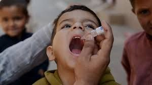
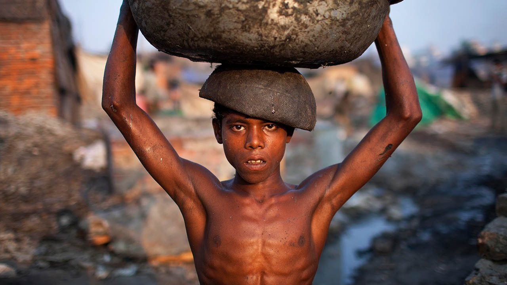

Barasat Society for Social Advancement has been working in Kolkata for over 15 years, focusing on alleviating poverty and social exclusion. We do this through well-planned and comprehensive programmes in health, education, livelihoods and disaster preparedness and response. We also focus on generating and sharing knowledge with diverse stakeholders to influence sustainable impact at scale. Our overall goal is the empowerment of women and girls from poor and marginalised communities, leading to improvement in their lives and livelihoods. We are part of the CARE International Confederation working in over 90 countries for a world where all people live with dignity and security. We provide, HEALTH EDUCATION LIVELIHOOD DISASTER PREPAREDNESS AND RESPONSE GENDER TRANSFORMATIVE CHANGE INCLUSIVE GOVERNANCE BUILDING RESILIENCE
BSSA is an NGO in India directly benefitting over 750,000 children and their families every year, through more than 350 live welfare projects on education, healthcare, livelihood and women empowerment, in over 1000 remote villages and slums across 25 states of India. Education is both the means as well as the end to a better life: the means because it empowers an individual to earn his/her livelihood and the end because it increases one's awareness on a range of issues – from healthcare to appropriate social behaviour to understanding one's rights – and in the process help him/her evolve as a better citizen. Doubtless, education is the most powerful catalyst for social transformation. But child education cannot be done in isolation. A child will go to school only if the family, particularly the mother, is assured of healthcare and empowered. Moreover, when an elder sibling is relevantly skilled to be employable and begins earning, the journey of empowerment continues beyond the present generation. Realizing this, BSSA an NGO in India, beginning in the corridors of education, adopted a lifecycle approach of development, focusing its interventions on children, their families and the larger community. BSSA believes that unless members of the civil society are involved proactively in the process of development, sustainable change will not happen. Following this model of Civic Driven Change, Smile Foundation sensitizes and engages the civil society, making it an active partner in all its welfare initiatives.
